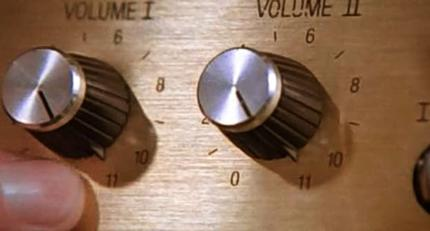

Introduction
Motto: Failure is a gift.
This is a book about failure, specifically how failure, if managed correctly, and used as a tool for learning, is the best way to grow as a software developer and build strong systems. Since I am a huge fan of domain-driven design (DDD), we will be focusing on one specific domain. This will allow me to show just how deep one can go into a domain, and how, if designed properly, you can build amazing things.
In order to do that, you need to give yourself a net, so that you can take chances and make mistakes and from them learn. I may not be the greatest, most accomplished programmer in the world, but I pride myself in being able to walk onto any team, programming in any language, and bring something to the table.
As we go, we will be building this poker engine together, and you will get to see just how stupid I can be, and how in the end, it doesn't really matter. When you get right down to it, I code because it's fun. This was a side project I started to find some peace as the pandemic started taking over everyone's lives. Rust is a very stiff, controlling language, and at that time I felt I needed to find a little control in something.
The First Perspective
TL;DR
Taking our first look at our repository. Get the code to run locally, isolate the problems, and fix them.
Systems are all about perspectives. When exploring a problem, I like to start with mapping out the different perspectives that will be interacting with it. For example, let's take a game of chess. In this case, an blindfold chess exhibition match between the #1 player in the world, Magnus Carlsen, and the #2 Hikaru Nakamura.
Take a minute, and try to picture all of there different perspectives that can exist on a simple, 15 minute game.
...
Here's what I came up with:
- Magnus while playing
- Hikaru while playing
- Each of the players coaching.
- Each of the players past experiences playing each other.
- The live, play by play on Take Take Take by GM David Howell and WFM Maud Rødsmoen.
- GothamChess aka Levy Rozman and GM Benjamin Bok doing play by play on Hikaru's YouTube Channel.
- GothamChess aka Levy Rozman giving his famous brand of analysis of the game on his YouTube channel.
- A playable web version of the game with analysis by Stockfish on Chess.com.
- Analysis of the game on the chess database Chessbase.
- Some enlightening reddit commentary.
A simple, text representation of the game. But that's the final outcome, not the foundation. Could it be said that it's the very game itself? The pieces, on the board, governed by rules, passed down over generations.
For software developent, I maintain that the foundation is the software developer, and unfortunately, probably the one that is least appreciated in modern enterprise. Your perspective on creating systems is what matters most. Our goal is to make things as smooth as possible for you, or any other developer to work on something. In the case of this book, I've designed it so that you can walk in at any point, and start working on the next, at any time. I've tried to make it as easy possible for you to code along, making this an experience were you are an essential part of the process.
As we go along, building our poker engine, we will be adding more and more perspectives, as our system matures. Right now there is only one: you... the developer.
It's my not so humber opinion, that how little companies consider this, is one of the most needless wastes of money in our industry. Case in point:
Story time. Y'all can skip these things. I wouldn't be a Baker if I didn't litter this book with stories.
It was my first day working on an engagement for a major clothing retailer.
"So, what are you working on?"
The question came from the gentleman sitting next to me on the open floor of their stunning corporate main office. "Nothing. I don't access yet."
He laughed. "Oh, your signing bonus."
"My what?"
"Your signing bonus. Getting paid to do nothing... that's your signing bonus. Here it's around two weeks."
Over the years, I have see signing bonuses that have gone on for months. I would bet that there are many who's signing bonus lasts for years.
I hate initial setup chapters in coding books. Instead, let's start our project's codebase with a really messed up version based on my World's Simplest Kata. It's designed to show you many of the different ways that Rust code can fail continuous integration tools like GitHub Actions.
Here are the files for our initial commit:
.github/workflows/CI.yaml
.gitignore
Cargo.lock
Cargo.toml
LICENSE-APACHE
LICENSE-MIT
src/lib.rs
Cargo.toml
We start with Cargo.toml, the manifest file that defines the key elements of our Rust project. You can see a breakdown
of the entries in The Cargo Book.
[package]
name = "rust4failures"
description = "Poker library."
version = "0.0.1"
edition = "2024"
rust-version = "1.98.1"
authors = ["electronicpanopticon <gaoler@electronicpanopticon.com>", "Readers"]
license = "MIT OR Apache-2.0"
keywords = ["rust", "book", "poker", "wasm"]
[dependencies]
[dev-dependencies]
[lints.clippy]
pedantic = "warn"
$> git checkout step-001-kata
Up next is Cargo.lock. It's autogenerated when you run cargo build. Don't
touch it. We are committing it.
# This file is automatically @generated by Cargo.
# It is not intended for manual editing.
version = 4
[[package]]
name = "rust4failures"
version = "0.0.1"
$> git checkout step-001-kata
Linting
One thing that I want to call out is this line pedantic = "warn" under lints.clippy. I love linters
on my projects, and add them whenever I can. It's best to use them from the start, since the longer
you wait, the more you have to clean up when you add it.
Rust's Clippy linter is the best in the business. And since I'm insane, I like to dial it up to 11 with the pedantic setting.

💡LESSON: Linters are a powerful way to keep your code clean, and catch basic coding issues.
lib.rs
Now down to business. This is a simple Hello, World example. It's all going to be gone in a
bit, but it's a good way to kick the tires on how we are ensuring quality in this project.
pub struct Hello;
/// The [Helo] project is a simple hello world program. It comes with two methods:
///
/// 1. `hello` - This method takes a `String` and returns `Hello, {name}!`.
/// 2. `hello_world` - A default method that returns `Hello, world!`.
///
/// ```
/// use worlds_simplest_kata::Hello;
///
/// let hello = Hello::hello("everyone".to_string());
/// assert_eq!("Hello, everyone.", hello);
///
/// ```
impl Hello {
pub fn hello(name: String) -> String {
format!("Hello, {}!", name)
}
pub fn hello__world() -> &'static str {
Hello::hello("wirld!".to_string())
}
}
#[cfg(test)]
mod tests {
use super::*;
#[test]
fn hello_world() {
assert_eq!("Hello, world!", Hello::hello__world());
}
}$> git checkout step-001-kata
~~~~~~~~~~~~~~~~~~~~~~~~~~~~~~~~~~~~~~
()-() ()-()
\"/ NOW IT'S YOUR TURN! \"/
` `
`hello` hands back an owned `String`. `hello__world` promises a borrowed
`&'static str`. Both cannot be true, so one of the two has to move.
- The compiler suggests `&Hello::hello(…)`. Take the suggestion, run
`cargo check` again, and read what it says next.
- The other direction changes the signature. Which one leaves the caller —
the test at the bottom of the file — still working?
- Everything else in this file is still wrong: the doc test names a crate that
does not exist, the greeting has two spaces, the world is spelled `wirld`,
and the method has two underscores. Leave them. Compiling and being correct
are different jobs, and this one is compiling.
The one-line answer
The signature moves, not the body. hello__world returns exactly what hello
returns, and now it says so.
pub struct Hello;
/// The [Helo] project is a simple hello world program. It comes with two methods:
///
/// 1. `hello` - This method takes a `String` and returns `Hello, {name}!`.
/// 2. `hello_world` - A default method that returns `Hello, world!`.
///
/// ```
/// use worlds_simplest_kata::Hello;
///
/// let hello = Hello::hello("everyone".to_string());
/// assert_eq!("Hello, everyone.", hello);
///
/// ```
impl Hello {
pub fn hello(name: String) -> String {
format!("Hello, {}!", name)
}
pub fn hello__world() -> String {
Hello::hello("wirld!".to_string())
}
}
#[cfg(test)]
mod tests {
use super::*;
#[test]
fn hello_world() {
assert_eq!("Hello, world!", Hello::hello__world());
}
}$> git checkout step-002-kata-compiles
One word. The block holds the whole file, because the repository needs the whole file, but only the method was printed on the page.
cargo check is green. cargo test is not, which is why this step declares
expect="test_fail":
$ cargo test
thread 'tests::hello_world' panicked at src/lib.rs:31:9:
assertion `left == right` failed
left: "Hello, world!"
right: "Hello, wirld!!"
💡LESSON: "It compiles" is the first gate, not the last one. A green compiler only means the code is well formed. The tests are what say it is right.
Continuous Integration
GitHub Actions
This is our traffic cop. There are many different ways to setup continuous integration, but
GitHub Actions is one of my favorites. I'd recommend
that you check out the entire file for our CI guardrails. For now, I've highlighted two sections:
on and the test job. On tells us that we are checking everything every time there's a push
or a pull request. After a while, that may be too much, and we can dial it down, but for now
it's good.
# ... 2 lines elided — full file: https://github.com/abstecker/rust4failures/blob/step-001-kata/.github/workflows/CI.yaml
on:
push:
pull_request:
# ... 7 lines elided — full file: https://github.com/abstecker/rust4failures/blob/step-001-kata/.github/workflows/CI.yaml
jobs:
test:
name: Rust ${{matrix.rust}}
runs-on: ubuntu-latest
strategy:
fail-fast: false
matrix:
rust: [stable, 1.98.1]
timeout-minutes: 45
steps:
- uses: actions/checkout@v4
- uses: dtolnay/rust-toolchain@master
with:
toolchain: ${{matrix.rust}}
- run: cargo test --all
# ... 40 lines elided — full file: https://github.com/abstecker/rust4failures/blob/step-001-kata/.github/workflows/CI.yaml
$> git checkout step-001-kata
Introduction
Motto: Failure is a gift.
I am a failure. I have been a failure all my life. I’ve dropped out of college three times. I graduated from high school with a D average. I’ve lost every professional French Horn audition I’ve ever taken. (I did win first horn at the California State Honor Band, but all the other horn players were so mad that I'd won they didn't talk to me, so I was miserable the whole time.) For a period of time I was homeless. (Ask me about sleeping in the San Francisco Symphony's Davies Symphony Hall musician's lounge.)
In the fifth grade, I got the silver medal for having the second-worst car in the Cub Scouts Pinewood Derby. I would have been last, but the Scout Master from a rival troupe took the wheel that had fallen off from one of his kids' cars, hammered it back onto the car, and stole first from me by deliberately creating a car that wouldn’t roll. I even failed at failure. I was the worst. I should have gotten the gold, but no, I was the second worst. If you’r*e not last, you’re…?
There’s only one thing that I’ve ever really felt like a master of. Nobody run the early morning solo coffee rush at a 7-11 better than me. At the Colma 7-11 I kept all five pots of coffee humming, making sure to keep them in a steady rotation, so that those smart-asses who tried to get the fresher pot of coffee by grabbing the one in the back were actually getting the oldest one. Not that it mattered. They were always fresh as fuck. A regular walked in, and I had their three packs of Benson & Hedges Ultra Lights waiting for them at the register before they even asked. I was the shit, and all of my customers knew it, and were gracious to let me know, if in more family-friendly terms.
Then, one simple event solidified it all for me. A beautiful motor home drove into the parking lot, and out stepped a gentleman to buy a cup of coffee and a pack of gum. We talked. He* wanted to thank me. He was doing really well now. He was working in a restaurant in downtown San Francisco and had really turned his life around, all thanks to me! Great. Just great.
A year before, he was pointing a revolver at my face. He ran out with two-hundred dollars, only to be caught by the K-9 unit a few blocks away shortly thereafter. This nimrod had fucking robbed me, and he was already doing better than me. His life was on beautiful, and I was still that dumb smuck making $9 under the table, farting his life away at the 7-11 in the city where San Francisco buries its dead.
It wasn’t until I became a professional programmer that I realized failure is a gift IF you learn from it. By testing this shit out of the systems I built, I turned my ability to fail into a superpower. The faster you fail, the faster you build solid shit.
You see… it turns out that we’re all in the feedback business. You will get that feedback. It just depends on if you want to get it when you’re testing your tiles out in a controlled environment, or if you want to find out when every kid in school is watching your space shuttle explode with the first teacher in space. I was one of those kids.
The irony is, that there is such truth to this dynamic that it's shaped out global economy. The big money is on failing big. Why use your profits to improve customer satisfaction in your airline, when you can instead give yourself and your investor pals more cash with stock buybacks? Why earn profits when you can make money promising the moon as long as number go up and you get while the getting is good? Why ensure the best returns for your customers, when you can instead create dark money pools making sure that you always take the cream off the top first? Why represent people, when you can lock in a job for life and get hot stock tips and free gigs for your fam just by not getting anything actually done?
Alas, this is not about failing slow in order to extract the maximum amount of damage and or grift. Fuck the fail leaches. This is about failing smart and failing fast. This is about building systems that are battle tested. Ones that get stronger the longer they are developed. Ones designed to maximize utility, while minimizing risk. I build systems that I am proud of when I walk away. This is how I do it.
Who am I?
I'm Christoph. I'm a professional software developer who has been working for 28 years. I got my start in the SF dot.com boom, and went on to live through three tech sector crashes. I'm 60 years old, and can still walk onto any team coding in any language and deliver value by using the techniques that I will be cover in this book. My work is in cars and planes and banks and electric charging stations and government agencies that I am not allowed to talk about, in languages that you probably hate, like Java and PHP, and .NET and JavaScript and Ruby and Python and C++ and Kotlin, and TypeScript and C. No, I didn't make bank off of one of the startups that I worked for, and TBH, I got off pretty good walking away with nothing, given how fucked several of my friends got from companies where their contributions were critical. I did make a lot of fucking money for a lot of companies, and always by doing work that I was proud of. I try to be a force multiplier. Find gaps... automate away the gaps... repeat until no longer needed... walk away smiling. I've worked with dozens of developers who could code me under the table, and I'm greatful for how much I've learned from them. But there's only one Christoph, and I'm Christoph, mother-fucker.
Why Poker?
My father's side of the family are all into card games, especially bridge. As someone who enjoys the occasional poker tournament, I became interested in what they call Game Theory Optimal (GTO) style of play. Often, pros will pay hundreds of dollars for good solver tools, but I thought that it would be more fun to write my own.
Poker is a nice fixed domain that allows us to explore things in depth. It's a fun way to visually show code in action.
NOTE: Gambling addiction is one of the plagues of our times. I am not a gembler. I just like to plunk down a few hundreds every now and then on a tournament. More often, I am watching WSOP tournaments and shows on Poker Go. Please be careful. This code is not designed to encourage you to gamble.
Why Rust?
TBH, this is a bet. For a long time I've felt like the domain surface of complex software systems is much too wide, unorganized, and exposed. Now that we are living through the era of agentic coding solutions, we are seeing that risk manifest in real time. Agentic coding systems may not be the best at constructing architectural beauty, but they can sure as shit act like a million chaos monkeys. Organizations will have no choice but to tighten up everything.
When you get right down to it, Rust is a trauma response from the years and years of defects created by other languages. I am a firm believer in making problems impossible instead of traditional creating controls to prevent them. Rust can create shit systems with the best of them, but by its very design it makes a whole collection of code crimes simply impossible to commit.
Programming languages like JavaScript and Python were never designed to be the source of truth of complex systems. Suddenly, the velocity of code change is accelerating exponentially, and languages designed with flexibility in mind are seeing that feature being used against them. Anyone maintaining systems now is seeing that effect in real time. Security alerts about popular libraries are now a daily occurrence. Agentic coding systems may not be the best at constructing architectural beauty, but they can sure as shit act like a million chaos monkeys.
You see, when I talk abour failing as a skill, it's all about controlled failure. Minimizing risk. Python, and other scripting languages like it, are so flexible that the variance they introduce, compounded by the velocity of the coding agents that produce it, creates a terrifying cocktail. Add on to that the fact that many of the people using these systems have no fucking clue what the code they are creating actually does.
Rust, combined with disciplined design and technologies like web assembly, offer a way to simplify and organize what has been traditionally been a mess, outside of the exhalted chambers of bank mainframe system develoers. Not only do I believe that but I intend to prove it.
That doesn't mean that these languages like Python and JavaScript won't play a supporting role in this exercise. One of my favorite returns of investment in the way I have been coding, is how easily I can take my core library and wrap it in Python or Node.JS. How I can use that same single library and create not just one, but several web applications, all using a blob of code that's under 5MBs, and working with the same, battle tested library functioning as a single source of truth.
So, come along, as I show you how to turn failing into your superpower. Or don't. You're still going to fail. The question is, will you see it as the gift it really is?
Hell in a Cell
TL;DR
I hate initial setup chapters in coding books. Just do the The World's Simplest Kata to make sure you have everything setup correctly.
EDITOR: This all may suck. Could just leave the top part.
ANNOUNCER:
Two programmers walk in, one walks out. Who will triumph...
💥💥EXPLOSIONS💥💥
QUEUE Gonna Fly Now aka Rocky Theme
the naive young developer trying to thrive in our cruel technocratic society...
💥💥LASER SHOW💥💥
QUEUE Flight of the Concords' Robots
or Broboto, the Soulless Savage AI Robot, trained by Silicon Valley, hellbent on terminating anyone who dares to clutch a keyboard?
Sure, every sociopathic CEO on the planet is trying to replace you with AI, but can they? These programming streets are hard, and the defects don't play by Marquess of Queensberry Rules. Right now hundreds of thousands of clueless users and vapid script kiddies are foaming at the mouth to do incredibly stupid and cringeworthy things to any program released into the wild.
Are you going to run back to mommy's safe warehouse job or are you going to step to it and take on the AI horde? Do you have what it takes? Do you have the intestinal fortitude to enter the
██╗ ██╗███████╗██╗ ██╗ ██╗███╗ ██╗ █████╗
██║ ██║██╔════╝██║ ██║ ██║████╗ ██║ ██╔══██╗
███████║█████╗ ██║ ██║ ██║██╔██╗ ██║ ███████║
██╔══██║██╔══╝ ██║ ██║ ██║██║╚██╗██║ ██╔══██║
██║ ██║███████╗███████╗███████╗ ██║██║ ╚████║ ██║ ██║
╚═╝ ╚═╝╚══════╝╚══════╝╚══════╝ ╚═╝╚═╝ ╚═══╝ ╚═╝ ╚═╝
██████╗███████╗██╗ ██╗ ██████╗
██╔════╝██╔════╝██║ ██║ ╚════██╗
██║ █████╗ ██║ ██║ ▄███╔╝
██║ ██╔══╝ ██║ ██║ ▀▀══╝
╚██████╗███████╗███████╗███████╗██╗
╚═════╝╚══════╝╚══════╝╚══════╝╚═╝
The Cell
You and your AI opponent will be locked into a Cell of the Rust programming language. Why Rust? Because it's difficult, and cruel, and the programmers who code in it are all assholes, and naturally, since I am an asshole, it is my favorite language. Seriously, because of it's strict nature it's the perfect antidote to the AI vibe sludge coming out these days.
The problem is simple: Hello, World!. Yes, Hello, motherfucking World!. The most overused programming exercise on the planet; Beaten to death so hard that it's the turned into the finest McRib worthy pink slime.
The Opposition
Your opponent is CoPilot. Yes, CoPilot; Sam Altman's & Satya Nadella's purloined AI love child currently infesting every Microsoft based application it can sink it's binary claws into. Oh my, how did I ever use Notepad before CoPilot? Thank you! Thank you!!! I'll never had to worry about how to end a sentence again!
GitHub has added an adorable new feature: you can now get code reviews from CoPilot. So, I've taken the error littered original version of the kata, and ran it through a CoPilot code review, to see how well it can do.
Let us go!
Here's your mission:
- Fork the The World's Simplest Kata repo.
- Make the failing GitHub Actions green.
Here's were you should stop and try to work through it yourself. If you're still having issues here's a walkthrough of me getting things to work:
Step 1: Install Rust
➔ TL;DR GOTO rustup.rs. Do what it says.
Rust has the best ecosystem for a programming language in the world. If you've banged your head against the wall trying to get a grip on how to manage Python projects, or lost yourself in a sea of gcc compiler flags, Rust will seem like a cool ocean's breeze.
- Install rustup.
- run
rustup install
You should see something like this:
$> rustc --version
rustc 1.97.1 (8bab26f4f 2026-07-14
Step 2: Fork it
IF you have a github account: fork the repo enable GitHub Actions for your fork.1 ELSE if brah, I don't mess with those giganto corporations, man: download the code onto your machine.
Question: Does it build?
$> cargo build
`/Users/flubble/src/github.com/devplaybooks/rust_worlds_simplest_kata/Cargo.toml`
Caused by:
rust-version 1.72.1 is incompatible with the version (1.85.0) required by the specified edition (2024)It's insane how good the Rust compiler is at spelling out exactly what the problem is. The ../../../Cargo.toml file says edition = "2024" but the Rist versions is set to 1.72.1. Let's bump it up to what we're running, version 1.97.1:
diff --git a/Cargo.toml b/Cargo.toml
index 7220334..26bb72e 100644
--- a/Cargo.toml
+++ b/Cargo.toml
@@ -3,7 +3,7 @@ name = "worlds_simplest_kata"
version = "0.1.2"
authors = ["electronicpanopticon <gaoler@electronicpanopticon.com>"]
edition = "2024"
-rust-version = "1.72.1"
+rust-version = "1.97.1"
description = "A kata to learn how to fix basic issues with rust code."
repository = "https://github.com/devplaybooks/rust_worlds_simplest_kata"
license = "GPL-3"
Step 4: Does it build now?
Let's see how we're doing:
$> cargo build
Compiling worlds_simplest_kata v0.1.2 (/Users/christoph/src/github.com/abstecker/worlds_simplest_kata_no_actions)
error[E0308]: mismatched types
--> src/lib.rs:23:9
|
22 | pub fn hello__world() -> &'static str {
| ------------ expected `&'static str` because of return type
23 | Hello::hello("wirld!".to_string())
| ^^^^^^^^^^^^^^^^^^^^^^^^^^^^^^^^^^ expected `&str`, found `String`
|
help: consider borrowing here
|
23 | &Hello::hello("wirld!".to_string())
| +
For more information about this error, try `rustc --explain E0308`.
error: could not compile `worlds_simplest_kata` (lib) due to 1 previous errorRust strings still terrify me. I feel like I am a lot better at dealing with them then when I first started out, but still... damn do they call out all of my deficiencies as a developer. My php, perl coding early ass didn't know shit... didn't learn shit... was just making it up as I went along... ASIDE: I still am.
Basically, a String is is stored in the heap2 of your program. It's like that extra suitcase you take on a trip so that you can fit in silly nick knacks you collect along your way. A str primitive type, on the other hand, is something that you can borrow, but not buy. It's like that key to the gas station restroom, chained to an old license plate. You can borrow it, but it's not yours.
In this case, the hello__world function is returning &'static str; what's called a string literal. It's a string that's burned into your program, and will exist unti it ends. It's like that tattoo you got that one night, in that place were no one can see it... you know the one.
I can see three paths forward. Here's the simplest. I have a static function that's trying to return a static str, that insteads returning the results of a function that returns a String.
Patient: Doc, it hurts when I hold my arm like that. Doctor: Well don't hold arm like that.
So, let's do what it says:
pub fn hello__world() -> &'static str {
"Hello, world!"
}Now we're returning a pure String literal. Let's see how it does.
$> cargo build ─╯
warning: method `hello__world` should have a snake case name
--> src/lib.rs:22:13
|
22 | pub fn hello__world() -> &'static str {
| ^^^^^^^^^^^^ help: convert the identifier to snake case: `hello_world`
|
= note: `#[warn(non_snake_case)]` (part of `#[warn(nonstandard_style)]`) on by default
warning: `worlds_simplest_kata` (lib) generated 1 warning
Finished `dev` profile [unoptimized + debuginfo] target(s) in 0.00s
It builds, but with a warning. First, ret's get rid of that warning, and remove the dunder, or double underscore, from the hello__world() function.
Did you know that a double underscore in some programmering circles is called a dunder? I learned that while attending one of the Central Ohio Python User's Group meetings. In python code you will see functions named init , and they would call them "dunder inits."
Here's the update to the function that matches the recomentation from error message as close as possible:
pub fn hello_world() -> &'static str {
"Hello, world!"
}Let's see how that does.
$> cargo build
Compiling worlds_simplest_kata v0.1.2 (/Users/christoph/src/github.com/devplaybooks/rust_worlds_simplest_kata)
Finished `dev` profile [unoptimized + debuginfo] target(s) in 1.00s
Nice... it builds fine.
cargo run
Finished `dev` profile [unoptimized + debuginfo] target(s) in 0.06s
Running `target/debug/worlds_simplest_kata`
Hello, world!
And it runs without a problem.
Let's see if the tests are green:
$> cargo test
Compiling worlds_simplest_kata v0.1.2 (/Users/christoph/src/github.com/devplaybooks/rust_worlds_simplest_kata)
Finished `test` profile [unoptimized + debuginfo] target(s) in 1.15s
Running unittests src/lib.rs (target/debug/deps/worlds_simplest_kata-c6a62a2629fcb368)
running 1 test
test tests::hello_world ... ok
test result: ok. 1 passed; 0 failed; 0 ignored; 0 measured; 0 filtered out; finished in 0.00s
Running unittests src/main.rs (target/debug/deps/worlds_simplest_kata-cfecd8ab1322d86e)
running 0 tests
test result: ok. 0 passed; 0 failed; 0 ignored; 0 measured; 0 filtered out; finished in 0.00s
yes, but...
Doc-tests worlds_simplest_kata
running 1 test
test src/lib.rs - Hello (line 10) ... FAILED
failures:
---- src/lib.rs - Hello (line 10) stdout ----
Test executable failed (exit status: 101).
stderr:
thread 'main' (876041) panicked at /var/folders/yc/zz4hyvrx0rzc5tdpkjgrkmy00000gn/T/rustdoctestCeSnEA/doctest_bundle_2024.rs:9:1:
assertion `left == right` failed
left: "Hello, everyone."
right: "Hello, everyone!"
note: run with `RUST_BACKTRACE=1` environment variable to display a backtrace
failures:
src/lib.rs - Hello (line 10)
test result: FAILED. 0 passed; 1 failed; 0 ignored; 0 measured; 0 filtered out; finished in 0.01s
all doctests ran in 0.69s; merged doctests compilation took 0.36s
error: doctest failed, to rerun pass `--doc`
This is a failure in the test that is written inside the documentation for the code.
I love Rust's documentation tests. One on the biggest challenges in keeping software up to date is the documentation. Changes will be made to the code, but everyone's in such a hurry, that they forget to keep the documentation up to date as well. Often, you will hear from developers that it's just better to just forget it, since it's often less than useless.
With doctests, not only do you ensure that you have up to date documentation, but you also provide examples to your users that you know are correct.
And, as is the case most of the time, the compiler spells out the problem. There's an extra space in the value returned from the hello() function.
Take 3:
$> cargo test
...
left: "Hello, everyone."
right: "Hello, everyone!"
Almost... Let's fix the punctuation.
cargo test
Compiling worlds_simplest_kata v0.1.2 (/Users/christoph/src/github.com/devplaybooks/rust_worlds_simplest_kata)
Finished `test` profile [unoptimized + debuginfo] target(s) in 0.49s
Running unittests src/lib.rs (target/debug/deps/worlds_simplest_kata-c6a62a2629fcb368)
running 1 test
test tests::hello_world ... ok
test result: ok. 1 passed; 0 failed; 0 ignored; 0 measured; 0 filtered out; finished in 0.00s
Running unittests src/main.rs (target/debug/deps/worlds_simplest_kata-cfecd8ab1322d86e)
running 0 tests
test result: ok. 0 passed; 0 failed; 0 ignored; 0 measured; 0 filtered out; finished in 0.00s
Doc-tests worlds_simplest_kata
running 1 test
test src/lib.rs - Hello (line 10) ... ok
test result: ok. 1 passed; 0 failed; 0 ignored; 0 measured; 0 filtered out; finished in 0.00s
all doctests ran in 0.61s; merged doctests compilation took 0.29s
Boom! We are green. Ship it!
$> git add .
$> git commit -m "Fixed failing tests, and compilation errors"
[bookwalker_fix1_static 7be5b8a] Fixed failing tests, and compilation errors
1 file changed, 2 insertions(+), 2 deletions(-)
$> git push
...
Let's see
There are, however, other ways...
...
...
...
TAKE 2:
Looking at the error, it's clear that they are mixing up the trwo
If you want to see a a microcosm that contains almost everything maddening about Rust, this file is it. Strings in Rust are pure pain.
Nope. We've still got a problem, and this one is the and it points to what is probably the hardest thing to understand about Rust programming: strings. Rust pulls no punches. If you come from a scripting background like JavaScript or Python, Rust strings are going to seem like pain incarnate. Unlike most other languages, Rust puts it all out there. Strings aren't easy.
Resources:
Question #2 Do the unit tests pass?
This is the Rubicon when it comes to builds. It is essential that a team keep their unit tests green, aka passing. Once you turn this check off because you "don't have time" you might as well turn in your keyboard and let the AI take over.
One of the key types of tests for any running system are what's called regression tests. Wikipedia defines it like this:
Regression testing (rarely, non-regression testing[1]) is re-running functional and non-functional tests to ensure that previously developed and tested software still performs as expected after a change.[2] If not, that would be called a regression.
OLD MAN VOICE: Back in my day we had what were called Quality Assurance Engineers. These were people who went through your code to make sure that the things you promised to deliver actually were, and that you didn't break any of the existing functionality to do so.
Good coverage from unit tests translates into an army of automated regression testers ready to descend upon your code at the push of a button.
And for the record, Quality Assurance is still an essential role in any software worth its salt. But with unit tests, they can spend their time doing what's called exploratory testing. The big flaw in unit tests are that they're a self fulfilling prophecy. You can only test the things you think of. A good QA dev can bring down a site in ways that many would call unnatural.
STORY TIME: I was leading a team at a small rust belt financial institution. The consulting practice I was working for at the time brought in a QA by the name of Paul Oaks. When we were ready to test out the front end of our application, he sat down and typed in an address. The site instantly self destructed. It took him less than one minute to destroy our application.
So, I'm like, how the F' did you do that? Paul collected bizarre addresses that he knew would crap out at a lot of commercial address validation services. RESPECT YOUR QA.
Question #3 Do all the Clippy lints pass?
No, not that [Clippy]... Rust's linter Clippy.
Linting is a form of static code analysis that checks that you're not making certain kinks of programming decisions that make your code hard to maintain. Large codebases will generally establish a common set of linting configurations so that everyone is on the same page.
Linting is one of the great ways to keep a codebase clean, and consistent. It's easy to miss simple, stupid things in the rush to get things out the door. A good linter that's tied to a continuous integration tool like GitHub Actions or Jenkins
For this kata, I've configured the linting at the top of the src/lib.rs file:
#![warn(clippy::pedantic)]
pub struct Hello;Question #4 Is the code properly formatted ?
The fmt check seems like a trivial one, but in large teams a difference of formatting can cause havoc on a large pull request.
Question #5 Do all the [Rustdoc lints] pass?
I LOVE LOVE LOVE how Rust handles documentation. One of the biggest challenges in writing software is keeping its documentation up to date. Code samples quickly become wrong, and rushed developers are rarely given enough time to make sure that the docs are up to date, especially within an organization with a predominance of what I call "neck breathers."
Rustdoc lints and doc tests eliminate almost all of this problem by catching references to code blocks that don't exist, and example code that doesn't compile or pass tests. This is HUGE! One of the biggest standoffs between developers and stakeholders is documentation. Stakeholders demand it, and devs point out that it is out of date as soon as it ships. Doc tests eliminate that issue. The linters check that you are pointing to the correct places in the code, and the compiler makes sure that any exxamples you include work against the actual codebase.
Thanks to GitHub Actions you can automate all of those features so that they run every time you push up code so that everyone is always on the same page.
MORAL: Automate the stupid stuff.
Let's see how CoPilot did.
Wow, CoPilot fixed every test. Six of the GitHub continuous integration gates passed. The problem is, that there are seven. Sad trombone sound
CoPilot couldn't fix the clippy lints:
Run cargo clippy -- -Dclippy::all -Dclippy::pedantic
cargo clippy -- -Dclippy::all -Dclippy::pedantic
shell: /usr/bin/bash -e {0}
env:
RUSTFLAGS: -Dwarnings
CARGO_HOME: /home/runner/.cargo
CARGO_INCREMENTAL: 0
CARGO_TERM_COLOR: always
Checking worlds_simplest_kata v0.1.2 (/home/runner/work/rust_worlds_simplest_kata/rust_worlds_simplest_kata)
error: this method could have a `#[must_use]` attribute
--> src/lib.rs:18:12
|
18 | pub fn hello(name: String) -> String {
| ^^^^^
|
= help: for further information visit https://rust-lang.github.io/rust-clippy/rust-1.97.0/index.html#must_use_candidate
= note: `-D clippy::must-use-candidate` implied by `-D warnings`
= help: to override `-D warnings` add `#[allow(clippy::must_use_candidate)]`
help: add the attribute
|
18 ~ #[must_use]
19 ~ pub fn hello(name: String) -> String {
|
error: this argument is passed by value, but not consumed in the function body
--> src/lib.rs:18:24
|
18 | pub fn hello(name: String) -> String {
| ^^^^^^ help: consider changing the type to: `&str`
|
= help: for further information visit https://rust-lang.github.io/rust-clippy/rust-1.97.0/index.html#needless_pass_by_value
= note: `-D clippy::needless-pass-by-value` implied by `-D warnings`
= help: to override `-D warnings` add `#[allow(clippy::needless_pass_by_value)]`
error: variables can be used directly in the `format!` string
--> src/lib.rs:19:9
|
19 | format!("Hello, {}!", name)
| ^^^^^^^^^^^^^^^^^^^^^^^^^^^
|
= help: for further information visit https://rust-lang.github.io/rust-clippy/rust-1.97.0/index.html#uninlined_format_args
= note: `-D clippy::uninlined-format-args` implied by `-D warnings`
= help: to override `-D warnings` add `#[allow(clippy::uninlined_format_args)]`
help: change this to
|
19 - format!("Hello, {}!", name)
19 + format!("Hello, {name}!")
|
error: this method could have a `#[must_use]` attribute
--> src/lib.rs:22:12
|
22 | pub fn hello_world() -> String {
| ^^^^^^^^^^^
|
= help: for further information visit https://rust-lang.github.io/rust-clippy/rust-1.97.0/index.html#must_use_candidate
help: add the attribute
|
22 ~ #[must_use]
23 ~ pub fn hello_world() -> String {
|
error: could not compile `worlds_simplest_kata` (lib) due to 4 previous errors
Error: Process completed with exit code 101.
-
GitHub actions have become an attack vector of late, so always be careful about what you run. ↩